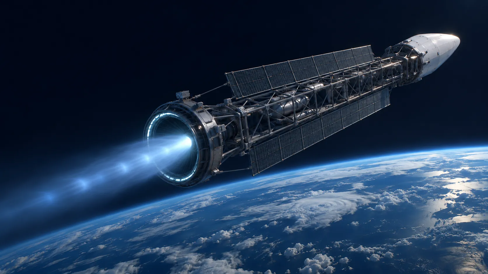

Full energy accounting
Every unit of fusion energy is assigned to a destination: exhaust, neutron absorption, radiation or rejected heat. No losses are hidden in assumed efficiencies.
Star Truck Space · SPRINT research program
We model a single pulsed fusion engine with a magnetic nozzle, from the fusion burn to directed exhaust, and check our assumptions against published experimental data.
Research directions
Each workstream addresses an open problem that decides the answer, and separates established physics from working assumptions.

Architecture
Each pulse compresses a fuel target to fusion conditions. Charged reaction products and heated propellant are expelled through the magnetic nozzle with no material contact. Compare the two fuel cycles under study.
Methodology
Every unit of fusion energy is assigned to a destination: exhaust, neutron absorption, radiation or rejected heat. No losses are hidden in assumed efficiencies.
Each simplification is documented alongside the result that depends on it.
Models are benchmarked against measurements from operating facilities.
Methods and inputs are documented so that independent researchers can reproduce the results.
Approach
Neutron energy recovery and D–D ignition are studied before secondary design questions.
Every result can be traced to the inputs and simplifications it rests on.
Plasma-jet merging is benchmarked against PLX; per-shot D–T yield against NIF.
Findings are published with their methods after internal and external review.
Founder
Founder, Star Truck Space
Igor founded Star Truck Space to pursue fast interplanetary transport through fusion propulsion. A long-time technologist with deep roots in engineering and computing, he leads the program’s research direction and modeling work.
The program is seeking a plasma physics advisor. Get in touch
Partnerships
SPRINT is currently self-funded and at an early research stage. Partnerships will fund GPU-based simulation, scientific advisory work and the publication of open technical notes.
GPU time and cloud credits for plasma-jet ensembles and neutron-transport simulation.
Plasma physics groups to review the models and co-author technical notes.
Funding for the simulation phase and a small core research team.